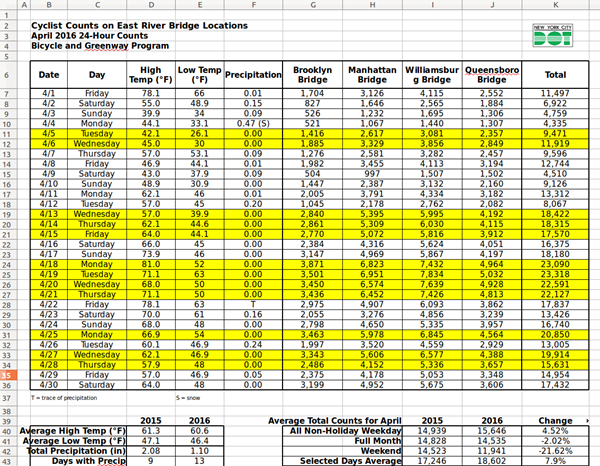
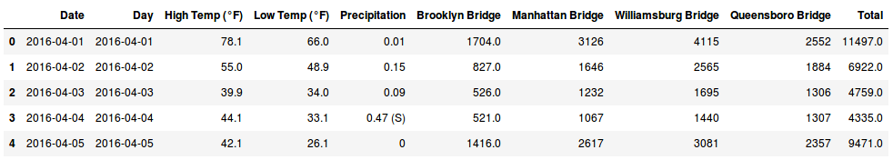
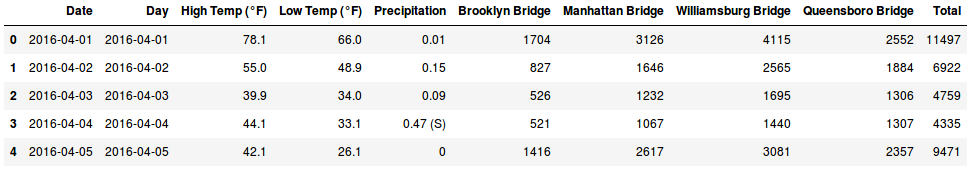
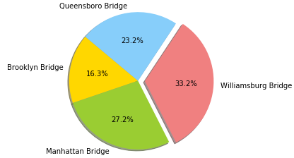
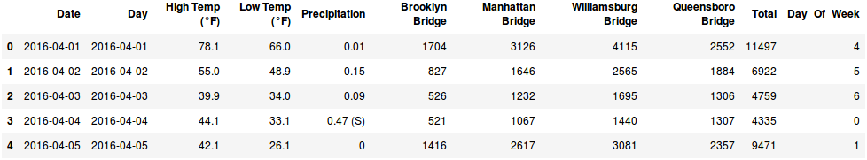
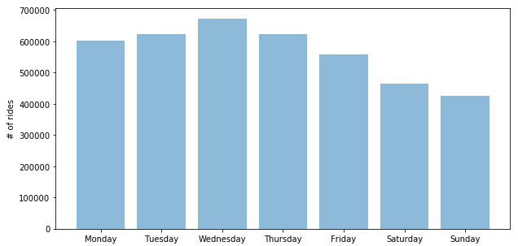
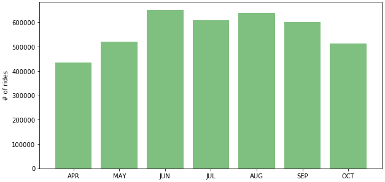
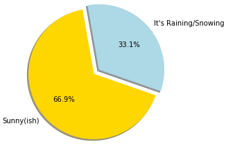

NYC East River Bridges Bicyle Traffic Analysis
New York City has quite a few interesting data sets. Earlier this year, I stayed in a hotel in Mahattan near the Williamsburg Bridge. It's an amazing site to see the number of cyclists commuting every morning there. This project takes some of the data collected by NYC DOT from April through October 2016 and examines some of the interesting data points.
About the data
This data is available on NYC's OpenData website. Sweet. That was easy! Of course, nothing in data analysis is ever easy, and this data is no different. What the folks at NYC DOT went ahead and did was to place each month's collected data in a formatted Excel sheet and also add some analysis in there for good measure. Awesome!

So not only do we have data that is in a messy spreadsheet, it's across multiple spreadsheets - one for each month!
Setup
As for most projects that poke at these sorts of data sets, I'm using a Jupyter Notebook. I've extracted all of the downloaded Excel files to a directory and created a notebook in the same directory.
Reading the data
Our first chore is munging the data. Some folks hate this part of analysis, but it's rare that one does not have to clean the data, so why not embrace it?!
Import the libraries we'll need
import pandas as pd
import os
from matplotlib import pyplot as plt
import numpy as np
List the contents of our working directory
path = os.getcwd()
files = os.listdir(path)
files
This should yield something like:
['05 May 2016 Cyclist Numbers for Web.xlsx',
'Bicycle Counts for East River Bridges Metadata.docx',
'07 July 2016 Cyclist Numbers for Web.xlsx',
'NYC East River Bicycle Analysis.ipynb',
'08 August 2016 Cyclist Numbers for Web.xlsx',
'06 June 2016 Cyclist Numbers for Web.xlsx',
'09 September 2016 Cyclist Numbers for Web.xlsx',
'10 October 2016 Cyclist Numbers for Web.xlsx',
'04 April 2016 Cyclist Numbers for Web.xlsx',
'.ipynb_checkpoints']
Obtain a list of the file names
The above is a nice list, but it contains files other than our Excel file. We'll use a list comprehension to iterate over the files in the current working directory to return a list of only files witht he ".xlsx" extension.
xlsx_files = [f for f in files if f[-4:] == 'xlsx']
xlsx_files.sort() # for my ocd
xlsx_files
And now we have:
['04 April 2016 Cyclist Numbers for Web.xlsx',
'05 May 2016 Cyclist Numbers for Web.xlsx',
'06 June 2016 Cyclist Numbers for Web.xlsx',
'07 July 2016 Cyclist Numbers for Web.xlsx',
'08 August 2016 Cyclist Numbers for Web.xlsx',
'09 September 2016 Cyclist Numbers for Web.xlsx',
'10 October 2016 Cyclist Numbers for Web.xlsx']
Shoving the data into a Pandas Dataframe
So we have our list of files. Now it's time to create a Pandas Dataframe, iterate over each file, and add the content to the dataframe. If you recall from the view of the spreadsheet, these files have other information that is not raw data in them. We'll use some of Pandas built-in features to help us import only the rows we want.
df = pd.DataFrame()
for f in xlsx_files:
data = pd.read_excel(f, header=5, index=1, parse_cols='B:K', skip_footer=8)
df = df.append(data)
Let's do a sense check on our data
df.head()

df.shape
(214, 10)
So the headers and first few rows look good. The shape of our dataframe shows the correct number of columns and about the right number of rows, but let's just go ahead and count the days of the months being analyzed as a little safety check:
April - 30 days
May - 31 days
June - 30 days
July - 31 days
August - 31 days
September - 30 days
October - 31 days
TOTAL: 214 days
Sweet! I'd say we are in business! One quick observation of the first few rows shows a couple of surprises. We can see (without even inspecting data types) that both the 'Brooklyn Bridge' and 'Total' columns are floats, even though we would expect integer types. Let's cast those as ints now so our data behaves as we would expect.
df['Brooklyn Bridge'] = df['Brooklyn Bridge'].astype(int)
df['Total'] = df['Total'].astype(int)
 OK. That looks better. That 'Precipitation' column is looking like it might be tricky as it's currently a string type, but we'll figure that out later.
Analyzing total bridge traffic
With a tidy dataframe, we can now start poking at the data a bit. First question that came to my mind looking at the data was "What is the breakdown of bicycles over the various bridges?"
We'll aggregate just the bridge columns into a new dataframe and sum the totals.
bridges = df[['Brooklyn Bridge', 'Manhattan Bridge', 'Williamsburg Bridge', 'Queensboro Bridge']]
bridge_totals = bridges.sum().values
Let's plot the data:
# Data to plot
labels = list(bridges.columns)
sizes = bridge_totals
colors = ['gold', 'yellowgreen', 'lightcoral', 'lightskyblue']
explode = (0, 0, 0.1, 0) # explode 1st slice
# Plot
plt.pie(sizes, explode=explode, labels=labels, colors=colors,
autopct='%1.1f%%', shadow=True, startangle=140)
plt.axis('equal')
plt.show()
 I wasn't exactly surprised by this chart. The Williamsburg bridge is certainly very busy! Also, for anyone that's ever walked or biked across the Brooklyn Bridge - it's understandable why the numbers aren't as high!
Looking at ridership by day of week
Something that might be interesting would be ridership totals over all four bridges by day of the week. I'm sure there's a better way to do this, but when I examine datetime type of data, I will usually create a new column with the data that I seek for easy analysis. So in this case, I'll use Pandas built-in method of parsing the day of the week from datetime objects and add that to a new column.
df['Day_Of_Week'] = df.Date.dt.dayofweek

# add column for day of week. Monday=0, Sunday=6
day_of_week_totals = df.groupby(['Day_Of_Week'])['Total'].sum()
day_of_week_totals
Day_Of_Week
0 601202
1 623466
2 672666
3 623433
4 557519
5 465018
6 425205
The above groups by 'Day of Week' and then sums the total. Let's chart our data:
# Data to plot
fig = plt.figure(figsize=(10,5))
labels = ['Monday', 'Tuesday', 'Wednesday', 'Thursday', 'Friday', 'Saturday', 'Sunday']
y_pos = np.arange(len(labels))
totals = list(day_of_week_totals)
plt.bar(y_pos, totals, align='center', alpha=0.5)
plt.xticks(y_pos, labels)
plt.ylabel('# of rides')
plt.show()

Perhaps, from the data above, we might surmise that much of the bicyle traffic is communing to and from work.
Ridership by month of year
Like above, we'll create a new column that contains the month of the year, group the data by that and sum the totals.
df['Month'] = df.Date.dt.month
monthly_totals = df.groupby(['Month'])['Total'].sum()
# Data to plot
fig = plt.figure(figsize=(10,5))
labels = ['APR', 'MAY', 'JUN', 'JUL', 'AUG', 'SEP', 'OCT']
y_pos = np.arange(len(labels))
totals = list(monthly_totals)
plt.bar(y_pos, totals, align='center', alpha=0.5, color='g')
plt.xticks(y_pos, labels)
plt.ylabel('# of rides')
plt.show()

How tough are NYC East River bridge cyclists?
Let's determine if precipitation affects ridership. As noted previously, the 'Precipitation' column is not without drama. An 's' was used by the data collectors to indicate when the precipitation involved snow. Thank makes our analysis a bit tricky. So we'll make a judgement call and say either there was precipitation or not.
sunshine = df.loc[df['Precipitation'] == 0]
sunshine_total = sunshine['Total'].sum()
its_raining = df.loc[df['Precipitation'] != 0]
its_raining_total = its_raining['Total'].sum()
# Data to plot
labels = 'Sunny(ish)', "It's Raining/Snowing"
totals = [sunshine_total, its_raining_total]
colors = ['gold', 'lightblue']
explode = (0, 0.1) # explode 1st slice
# Plot
plt.pie(totals, explode=explode, labels=labels, colors=colors,
autopct='%1.1f%%', shadow=True, startangle=100)
plt.axis('equal')
plt.show()

I don't think there's any surprises there - no disrespect NYC cyclists! I hope you enjoyed exploring this data!